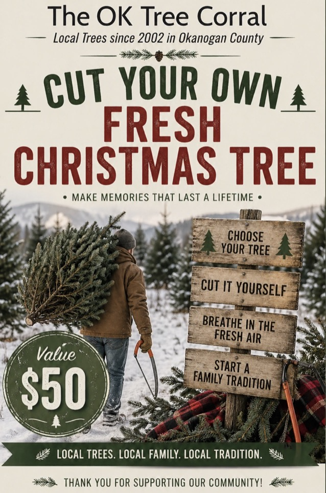
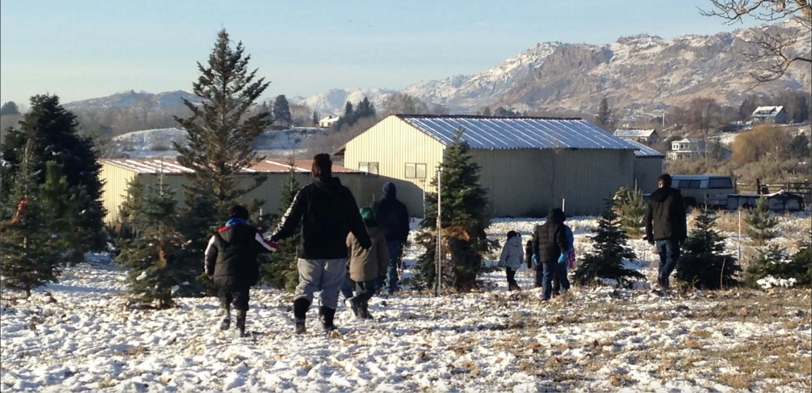
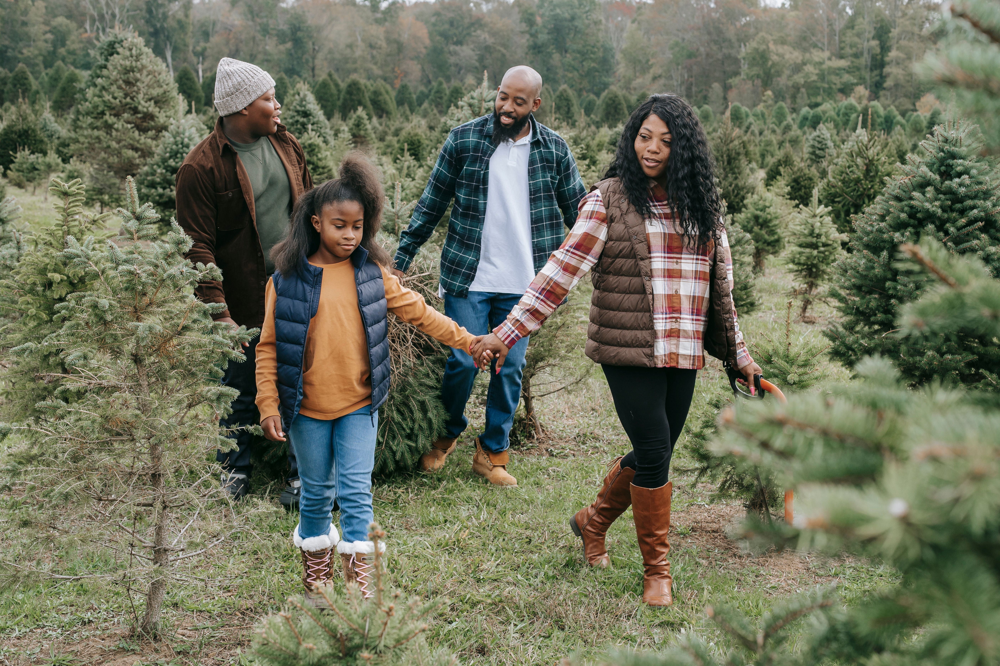
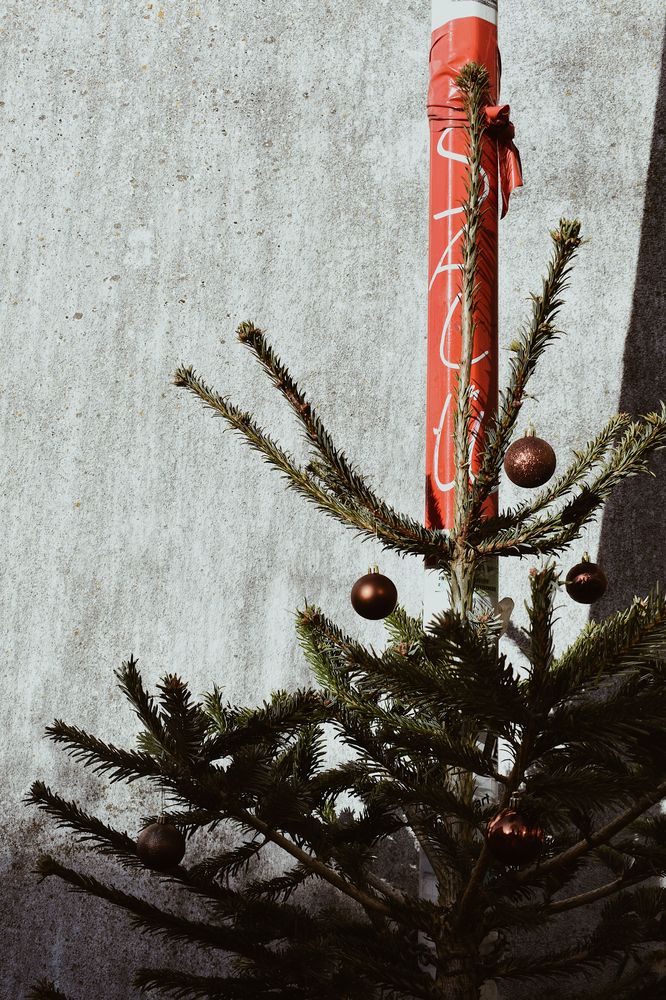
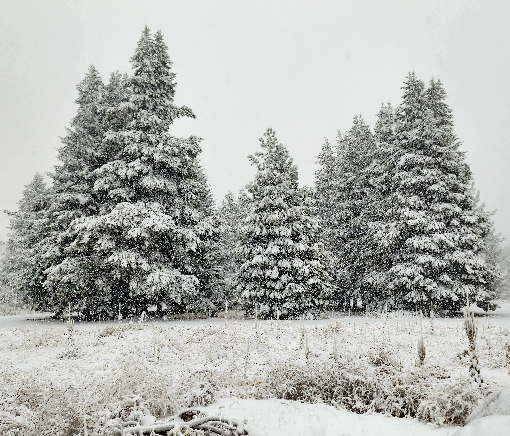
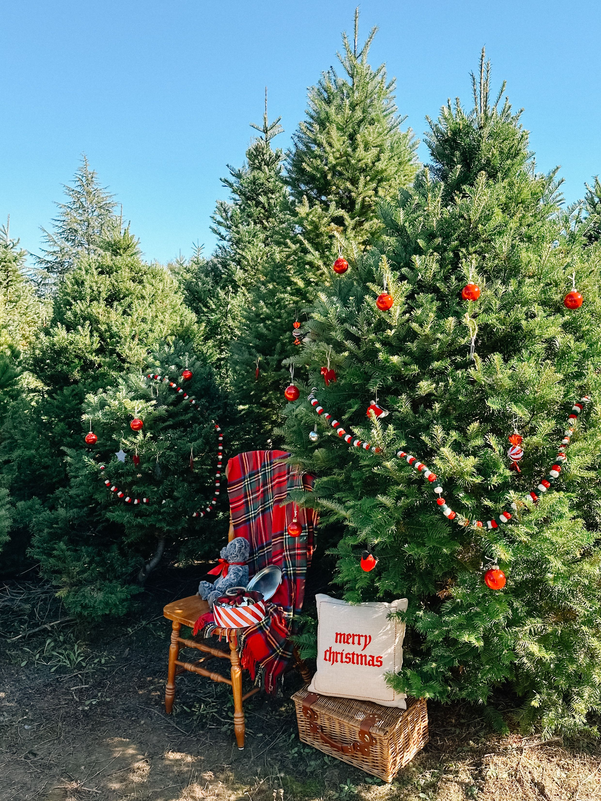
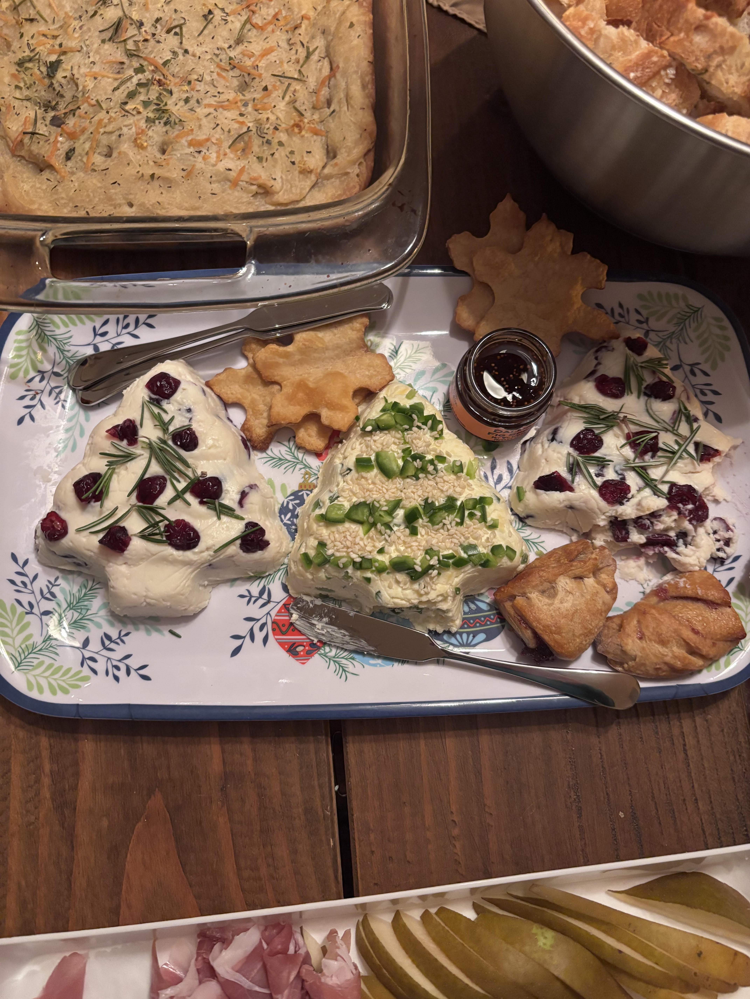

Hours
Open 9–4 from Black Friday until Dec 22, or until sold out.
Tuesday and Wednesday are by appointment only.
Real Christmas Trees Grown Here
Take a winter stroll among hundreds of trees, sip hot cider, and find the one that feels like home. Tall, small, we've got 'em all!
For best selection, reserve or cut your REAL Christmas tree soon!
Open 9–4 from Black Friday until Dec 22, or until sold out.
Tuesday and Wednesday are by appointment only.
Harvested Christmas trees are just $50. Ten foot and larger trees: $75.
Price includes cutting and loading assistance.
Cash, Check, Venmo and PayPal accepted.
39 Dalton Road
Omak, WA 98841
Call 509.422.0970 or email oktreecorral@gmail.com
Choose a Christmas tree for your home or business that's grown right here and stays fresh throughout the holidays. This year, enjoy a visit to a real Christmas tree farm in Omak, WA, and savor a sip of hot cider while you select the perfect tree.
Join us for a "Tree Hunt," hot cider and candy canes. We look forward to seeing you and your family, and we welcome you to help us celebrate our 24th season!
Thank you for supporting REAL Christmas trees in the Okanogan Valley.

Our Christmas tree varieties include:
Plus, we grow Pines, Spruce, Aspen and Walnut
for your home landscaping needs.
Make us an offer
on 5 landscaping trees or more!

Warm up between trees with a cup of cider and a sweet treat.
Bring your own saw or borrow one of our bow saws. Sorry, chainsaws are still not allowed.
Bring your camera for family photos, or book a photo session with our favorite local photographer.
Dogs are permitted — just please scoop the poop.









“Our place is miles above Hwy 97. The Tree Corral folks delivered 7 trees and unloaded them where I needed them for a fair price.”
– B. Tonasket
Reserve a time and we'll have the saws and cider ready. Tuesday and Wednesday visits are by appointment only.